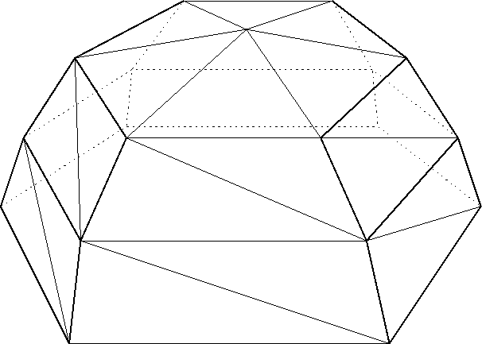
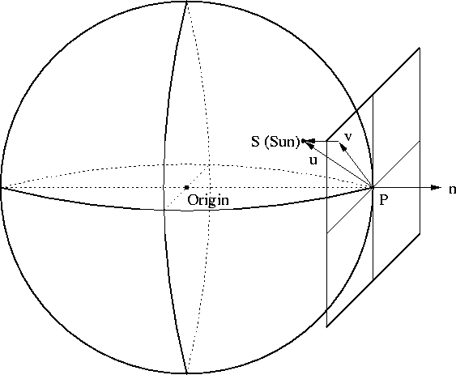
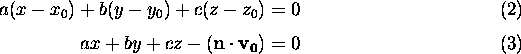
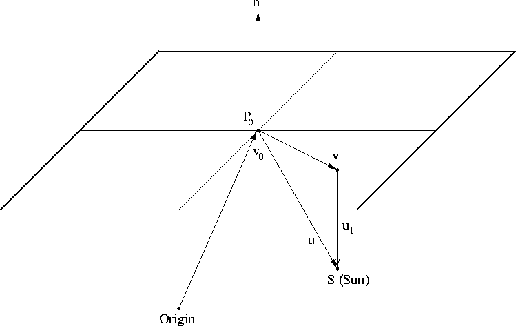
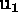
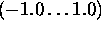
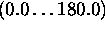

AboutHomeIntroduction Overview Features Screenshots DownloadsSource CodeExecutables Worldwide Scenery SupportVersion SummaryHardware Requirements Documentation Places to Fly Mailing Lists FAQ LinksRelated WebsitesRelated Projects ContributeContributingCVS Resources Goals Contributors Design Proposals Events |
Flight Gear Sky Representation and Rendering.
Curtis L. Olson
1 IntroductionNo flight simulator should be without a nice sky that smoothly transitions into haze at the horizon. Such a sky should also be able to render sunrise and sunset effects. This document describes how we have implemented such a sky.
2 OverviewThe sky is represent as a 12 sided dome (or upside down bowl if you prefer.) Figure 1 shows how a 6 sided dome might be constructed.

The center section can be constructed with a triangle fan. The inner and outer ``skirts'' can be constructed with triangle strips. The colors of each vertex can be independently controlled to achieve sky to haze transitions, sunrise/sunset effects with a pinkish/oranges glow, and one side of the sky can easily be made brighter than the other. By enabling smooth shading in OpenGL, the colors will be blended together for a very nice effect.
3 ImplementationThis sections describes how the sky has been implemented in OpenGL.
3.1 Vertex GenerationThe sky dome structure is intended to be centered over the current view point at sea level. This way we could paste cloud textures on the dome if we liked. So, we simply have to generate vertices for a fixed dome, and then use OpenGL calls to transform and rotate it to the desired place. Please refer to the actual code (.../../../Src/Scenery/sky.c) for specifics, but to generate the vertices we simply create a 12 element array for the inner set of vertices, another 12 element array for the middle set of vertices and a last 12 element array for the outer set of vertices.
3.2 Vertex ColoringFor each vertex position array, there is a corresponding vertex color array. This way we don't have to compute each vertex color every iteration. Also, by being able to individually control the color at each vertex, we can do all sorts of nice sky to haze blending with dusk and dawn effects. Again, please refer to the source (.../../../Src/Scenery/sky.c) for specific details on how the coloring is implemented. However, here's the quick overview.
3.2.1 Day and Night ColoringFor the general middle of the day, or middle of the night sky, we already know the desired sky color, and the haze color. This is computed elsewhere based on the current sun position. During the night these colors are both nearly black. During the dawn they are smoothly transitioned to day time colors. And, during the dusk they are smoothly transitioned back to night time colors. The center of the dome is assigned the current sky color. The color of the first inner ring of vertices is weighted 70% towards the sky color and 30% towards the fog color. Then color of the middle ring of vertices is weighted 10% towards the sky color and 90% towards the fog color. The the outer ring of vertices are assigned the current fog color.
3.2.2 Dusk and Dawn EffectsDusk and dawn effects can be accomplished by controlling the color of the vertices. Rather than trying to figure out which vertices are near the current sun position, I just rotate the dome so the 0'th vertex of each ring (and the center fan) align with the sun. This makes it easier to calculate vertex colors. But, there is a fair amount of work involved in calculating the proper dome rotation.

Figure 2 shows an overview of the setup. P, the
current view position, and , the local ``up'' vector,
define the plane which is tangent to the Earth's surface at point P.
Just for a quick review of your linear algebra, given ,
the position vector of P and
This is the vector equation of the plane and can be rewritten as:

We want to find a vector

Figure 3 shows a more detailed ``local'' view of the
points and vectors involved. The point, P, is the current view
point. The vector, , is the local up vector. S
represents the current position on the Earth's surface where the Sun
is directly overhead. We want to find the vector, To do this we first calculate  which is the shortest distance from point S to the tangent plane.
Armed with we can now calculate
Ok, so now we have
Whew, that gives us the angle we want. Well almost, not quite. The
problem is that the dot product returns a number in the range of
 . Thus, the function returns a
in the range of  . But this is not enough
information to determine if
So, to get that last piece of information we need, we can rotate the
vector
About this document ...Flight Gear Sky Representation and Rendering. This document was generated using the LaTeX2HTML translator Version 96.1 (Feb 5, 1996) Copyright © 1993, 1994, 1995, 1996, Nikos Drakos, Computer Based Learning Unit, University of Leeds. The command line arguments were: The translation was initiated by Curtis L. Olson on Wed Feb 18 18:10:55 CST 1998 Curtis L. Olson Wed Feb 18 18:10:55 CST 1998 |
 and Andrei Barbu a_barbu2@yahoo.com
and Andrei Barbu a_barbu2@yahoo.com